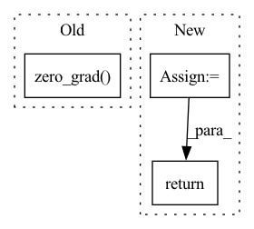

Pattern ID :24957
Before Change
)
loss.backward()
optimizer.step()
optimizer.zero_grad()
return loss.detach()
def evaluate_batch(self, batch, stage):After Change
self.g_optimizer.zero_grad()
predictions = self.compute_forward(inputs, sb.Stage.TRAIN)
d_loss = self.compute_objectives(
predictions, inputs, sb.Stage.TRAIN, "discriminator"
)
d_loss.backward()
self.d_optimizer.step()
self.d_optimizer.zero_grad()
return g_loss.detach() + d_loss.detach()
def evaluate_batch(self, batch, stage):
inputs = batch[0]In pattern: SUPERPATTERN
Frequency: 3
Non-data size: 3
Instances Fragment ID: 76766039
Project Name: speechbrain/speechbrain
Commit Name: de699fa49ebc3f5b1cca4061a41ddf44e8770c66
Time: 2020-09-24
Author: plantinga.peter@protonmail.com
File Name: recipes/minimal_examples/neural_networks/enhance_GAN/example_enhance_gan_experiment.py
M Class Name: EnhanceGanBrain
N Class Name: EnhanceGanBrain
M Method Name: fit_batch(2)
N Method Name: fit_batch(2)
M Parent Class: sb.Brain
N Parent Class: sb.Brain
M File Name: recipes/minimal_examples/neural_networks/enhance_GAN/example_enhance_gan_experiment.py
N File Name: recipes/minimal_examples/neural_networks/enhance_GAN/example_enhance_gan_experiment.py
M Start Line: 48
M End Line: 57
N Start Line: 45
N End Line: 63
Before Change
loss = loss.sum(dim=0)
valid_loss += loss.item()
self.optimizer.zero_grad()
if idx < 5:
for _mixture_resampled, _estimated_sources in zip(mixture_resampled, estimated_sources):
print(_mixture_resampled.size(), _estimated_sources.size())After Change
valid_loss = 0
valid_main_loss = 0
valid_reconstruction_loss = 0
valid_similarity_loss = 0
valid_dissimilarity_loss = 0
n_valid = len(self.valid_loader.dataset)
with torch.no_grad():
for idx, (mixture, sources, titles) in enumerate(self.valid_loader):
if self.use_cuda:
mixture = mixture.cuda()
sources = sources.cuda()
print(mixture.size(), sources.size())
batch_size, n_sources, _, T = sources.size()
mixture, sources = mixture.view(batch_size, T), sources.view(batch_size * n_sources, T)
mixture_resampled, sources_resampled = [], []
for idx in range(self.stage):
_mixture, _sources = self.resamplers[idx](mixture), self.resamplers[idx](sources)
_mixture, _sources = _mixture.view(batch_size, 1, -1), _sources.view(batch_size * n_sources, 1, -1)
mixture_resampled.append(_mixture)
sources_resampled.append(_sources)
// Forward
estimated_sources, latent_estimated = self.model.extract_latent(mixture_resampled, masking=True, max_stage=self.stage)
reconstructed, _ = self.model.extract_latent(mixture_resampled, masking=False, max_stage=self.stage)
_, latent_target = self.model.extract_latent(sources_resampled, masking=False, max_stage=self.stage)
// Main loss
main_loss = 0
for _estimated_sources, _sources in zip(estimated_sources, sources_resampled):
_sources = _sources.view(batch_size, n_sources, *_estimated_sources.size()[-2:])
_loss = self.criterion.metrics["main"](_estimated_sources, _sources, batch_mean=False)
main_loss = main_loss + _loss
// Reconstruction loss
reconstruction_loss = 0
for _reconstructed, _mixture in zip(reconstructed, mixture_resampled):
_loss = self.criterion.metrics["reconstruction"](_reconstructed, _mixture, batch_mean=False)
reconstruction_loss = reconstruction_loss + _loss
// Similarity and dissimilarity loss
similarity_loss, dissimilarity_loss = 0, 0
for _latent_estimated, _latent_target in zip(latent_estimated, latent_target):
_latent_target = _latent_target.view(batch_size, n_sources, *_latent_target.size()[-2:])
_loss = self.criterion.metrics["similarity"](_latent_estimated, _latent_target, batch_mean=False)
similarity_loss = similarity_loss + _loss
_loss = self.criterion.metrics["dissimilarity"](_latent_estimated, batch_mean=False)
dissimilarity_loss = dissimilarity_loss + _loss
loss = main_loss + self.criterion.weights["reconstruction"] * reconstruction_loss + self.criterion.weights["similarity"] * similarity_loss + self.criterion.weights["dissimilarity"] * dissimilarity_loss
loss = loss.sum(dim=0)
valid_loss += loss.item()
valid_loss += loss.item()
valid_main_loss += main_loss.item()
valid_reconstruction_loss += reconstruction_loss.item()
valid_similarity_loss += similarity_loss.item()
valid_dissimilarity_loss += dissimilarity_loss.item()
if idx < 5:
for _mixture_resampled, _estimated_sources in zip(mixture_resampled, estimated_sources):
print(_mixture_resampled.size(), _estimated_sources.size())
raise NotImplementedError
_mixture_resampled = _mixture_resampled[0].squeeze(dim=0).cpu()
_estimated_sources = _estimated_sources[0].cpu()
save_dir = os.path.join(self.sample_dir, titles[0])
os.makedirs(save_dir, exist_ok=True)
save_path = os.path.join(save_dir, "mixture.wav")
torchaudio.save(save_path, _mixture_resampled, sample_rate=self.sr, bits_per_sample=BITS_PER_SAMPLE_MUSDB18)
for source_idx, _estimated_source in enumerate(_estimated_sources):
target = self.valid_loader.dataset.target[source_idx]
save_path = os.path.join(save_dir, "epoch{}-{}.wav".format(epoch + 1, target))
torchaudio.save(save_path, _estimated_source, sample_rate=self.sr, bits_per_sample=BITS_PER_SAMPLE_MUSDB18)
valid_loss /= n_valid
valid_main_loss /= n_valid
valid_reconstruction_loss /= n_valid
valid_similarity_loss /= n_valid
valid_dissimilarity_loss /= n_valid
return valid_loss, valid_main_loss, valid_reconstruction_loss, valid_similarity_loss, valid_dissimilarity_loss Fragment ID: 76766043
Project Name: tky823/dnn-based_source_separation
Commit Name: 5abf28af1871d3f13e68fb3a3fd9aa859488461f
Time: 2021-08-13
Author: 40362510+tky823@users.noreply.github.com
File Name: egs/musdb18/meta-tasnet/src/adhoc_driver.py
M Class Name: Trainer
N Class Name: Trainer
M Method Name: run_one_epoch_eval(2)
N Method Name: run_one_epoch_eval(2)
M Parent Class: TrainerBase
N Parent Class: TrainerBase
M File Name: egs/musdb18/meta-tasnet/src/adhoc_driver.py
N File Name: egs/musdb18/meta-tasnet/src/adhoc_driver.py
M Start Line: 240
M End Line: 315
N Start Line: 240
N End Line: 328
Before Change
target_v_value = (new_min_curr_state_q_value - new_curr_state_log_pi).detach()
v_loss = F.mse_loss(curr_state_v_value, target_v_value)
v_loss_value = v_loss.detach().cpu().numpy()
self.v_optimizer.zero_grad()
v_loss.backward()
self.v_optimizer.step()
//compute q lossAfter Change
new_curr_state_q1_value = self.q1_network(state_batch, new_curr_state_action)
new_curr_state_q2_value = self.q2_network(state_batch, new_curr_state_action)
next_state_q1_value = self.target_q1_network(next_state_batch, next_state_action)
next_state_q2_value = self.target_q2_network(next_state_batch, next_state_action)
next_state_min_q = torch.min(next_state_q1_value, next_state_q2_value)
target_q = (next_state_min_q - self.alpha * next_state_log_pi)
target_q = reward_batch + self.gamma * (1. - done_batch) * target_q
new_min_curr_state_q_value = torch.min(new_curr_state_q1_value, new_curr_state_q2_value)
//compute q loss
q1_loss = F.mse_loss(curr_state_q1_value, target_q.detach())
q2_loss = F.mse_loss(curr_state_q2_value, target_q.detach())
q1_loss_value = q1_loss.detach().cpu().numpy()
q2_loss_value = q2_loss.detach().cpu().numpy()
self.q1_optimizer.zero_grad()
q1_loss.backward()
self.q1_optimizer.step()
self.q2_optimizer.zero_grad()
q2_loss.backward()
self.q2_optimizer.step()
//compute policy loss
policy_loss = ((self.alpha * new_curr_state_log_pi) - new_min_curr_state_q_value).mean()
policy_loss_value = policy_loss.detach().cpu().numpy()
self.policy_optimizer.zero_grad()
policy_loss.backward()
self.policy_optimizer.step()
//compute entropy loss
if self.automatic_entropy_tuning:
alpha_loss = -(self.log_alpha * (new_curr_state_log_pi + self.target_entropy).detach()).mean()
alpha_loss_value = alpha_loss.detach().cpu().numpy()
self.alpha_optim.zero_grad()
alpha_loss.backward()
self.alpha_optim.step()
self.alpha = self.log_alpha.exp()
alpha_value = self.alpha.detach().cpu().numpy()
else:
alpha_loss = torch.tensor(0.).to(util.device)
alpha_value = self.alpha.detach().cpu().numpy()
self.tot_update_count += 1
return q1_loss_value, q2_loss_value, policy_loss_value, alpha_loss_value, alpha_value
def try_update_target_network(self):
if self.tot_update_count % self.update_target_network_interval == 0: Fragment ID: 76766045
Project Name: x35f/unstable_baselines
Commit Name: 0fc82ae6328814fe2dad0c8e0ae1b172d3e5f981
Time: 2021-03-12
Author: ym8411012@126.com
File Name: sac/models.py
M Class Name: SACAgent
N Class Name: SACAgent
M Method Name: update(2)
N Method Name: update(2)
M Parent Class: BaseAgent,torch.nn.Module
N Parent Class: BaseAgent,torch.nn.Module
M File Name: sac/models.py
N File Name: sac/models.py
M Start Line: 75
M End Line: 129
N Start Line: 83
N End Line: 129